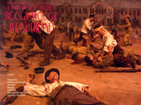
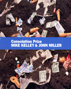
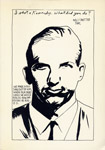
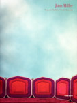
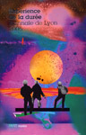
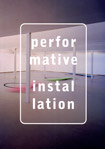
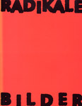
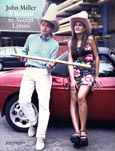
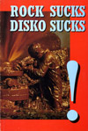
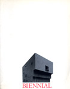

Abject Art: Repulsion and Desire in
American Art.
New York: the Whitney Museum of American Art, 1993, curated by Craig Houser,
Leslie C. Jones and Simon Taylor with texts by the curators and Jack BenLevi.
After the Observatory. New York: Paula Cooper
Gallery, 2003, curated with text by Robert Nickas.
All You Can Eat. Leipzig: Galerie für Zeitgenössische
Kunst, 2000, curated by Stephanie Sembill with texts by Jan Winkelmann,
Stephanie Sembill, Helen Molesworth and John Miller.
Altered States: American Art in the
90s. St. Louis: Forum for Contemporary Art, 1995, curated with text by Jeanne
Greenberg and Robert Nickas.
American Art Today: Fantasies &
Curiousities. The Art Museum at Florida International
University, 2000, curated by Dahlia Morgan with text by Dominique Nahas.
American Exuberance. Miami: The Rubell Family Collection, 2011, Juan Roselione-Valadez, ed. with texts by Kathryn Andrews, Frank Benson, Hannah Greely, Thomas Houseago, Richard Jackson, Rashid Johnson,Nate Lowman, John Miller, Richard Prince, Sterling Ruby, Haim Steinbach, Ryan Trecartin and Kaari Upson.
Amerikana. Realismus Studio NBGK, Neue Gesellschaft für Bildende Kunst e.v., 2009, curated with text by Frank Wagner.
Anni Novanta. Bologna: Galleria
Communale d'Arte Moderna, Musei Communali (Rimini) and ex colonia "Le
Navi" (Cattolica), 1991, curated by Renato Barilli, Dede Auregli and Carlo
Gentili with texts by Renato Barilli, Jan Avgikos, Jose Lebrero Stals,
Francoise Claire Prodhon, Dede Auregli and Roberto Daolio.
Art - a Sex Book. London: Thames & Hudson, 2003, by
John Waters and Bruce Hainley.
Art at the End of the 20th Century:
Selections from the Whitney Museum of American Art. New York: the Whitney Museum of
American Art, 1996, curated by David A. Ross and Eugenie Tsai with text by Johanna Drucker.
Art Dealers: the Power Behind the
Scenes,
New York: Crown Books, 1987, edited by Laura de Coppet and Alan Jones.
Art Focus 4. Jerusalem:
International Biennial of Contemporary Art, Museum of the Underground
Prisoners, 2004, curated by Suzanne Landau and Yigal Zalmona.
Art Meets Ads. Düsseldorf: Kunsthalle Düsseldorf and Edition
Cantz, 1992, curated by Jurgen Harten and Michael Schirner, texts by Jurgen
Harten and Thomas Schütte.
Art Supplies and Utopia. Stuttgart: Galerie
Ralph Wernicke, 1990, text by John Miller.
Artists' Books. Barcelona: Metronom, 1982.
Artist/Author: Contemporary Artists'
Books. New York: Distributed Art Press, 1997, by Cornelia Lauf and Clive Phillpot. (ill.)
Autoportraits Contemporains: Here's Looking at Me. Lyon: Espace Lyonnais
d'Art Contemporain, 1993, text by Bernard Brunon.
Avant Garde and After. New York: Harry Abrams, 1995, by Brendon Taylor.
Avant 1989. Lyon: Frac RhoneAlpes,
1989, curated by Haim Steinbach, text by Ronald Jones.
Bad Bad: That Is a Good Excuse. Staatliche Kunsthalle
Baden-Baden, 1999, curated with text by Margrit Brehm.
Benefit Exhibition for AIDs Research, New York: Loughelton,
Metro Pictures et al. and Jay Chiat, 1987.
Between Two Deaths. Karlsruhe, Germany: ZKM, Center for Art and Media,
2007, curated by Ellen Blumenstein and Felix Ensslin, texts by the curators and André Rottmann, Doreet LeVitte Harten,
Alain Ehrenberg, Eva Illouz, Snoia Arribas, Howard Rouse, Slavoj Zizek, Laurence A. Rickels, Mika Hannula, John Miller,
Dan Graham and Robin Hurst.
The Big Nothing. Philadelphia: the
Institute of Contemporary Art, University of Pennsylvania, 2004, curated by
Tanya Leighton, Ingrid Schaffner and Bennett Simpson, texts by the curators and
Paula Marincola.
CalArts: Skeptical Belief(s). Chicago: the
Renaissance Society and the Newport Harbor Art Museum (Newport Harbor), 1987,
curated by Suzanne Ghez, texts by Susan Davis,Catherine Lord, John Miller et
al.

Candy Factory Projects: Boogie-Woogie
Wonderland.
Yamaguchi, Japan: Akiyoshidai International Art Village, 2003, curated by
Takuji Kogo.
Le Capital : tableaux,
diagrammes &
bureaux d'etudes. Sete: Centre Régional d'Art
Contemporain Languedoc-Roussillon, 1999 curated with text by Nicolas Bourriaud.
Catalog of the Exhibition: 1984 - 2011. Los Angeles: 2nd Canon Publications, 2011, by Robert Nickas.
Correspondences: New York Art Now. Tokyo: La foret
Museum, 1985, essay by Alan Jones.
A Climate of Site. Amsterdam: Galerie
Barbara Farber, 1989, curated and text by Robert Nickas.
Cloaca Maxima. Zurich: Cantz Verlag, 1994, curated by Hans Ulrich Obrist, texts by Peter Fend,
Paul Armand Gette, Leon Golub, Al Hansen, Ilya
Kabakov, Mike Kelley, John Miller and Hans Ulrich Obrist.
A Collection: Made in the U.S.A. Rotterdam: Caldic
Chemie, B.V.,1993, essay by Yvette
van Caldenborgh and Macha Roesink.

Consolation Prize: Mike Kelley & John Miller. Vancouver: the Morris and Helen Belkin Art Gallery, curated by Roy Arden with texts by Roy Arden, John Miller, Shep Steiner and William Wood.
Critical Mass. New Haven: Yale
University and Dallas: Dallas Artists Research and Exhibition, 1994, essay by
Charles Long.
Dark Places. Santa Monica: Santa Monica Museum of Art, 2006, curated and text by Joshua Decter.
Der Spiegel des Narziss: vom mythologischen Halbgott zum Massenphänomen. Innsbruck: Galerie im
Taxispalais, 2012, curated by Jürgen Tabor with texts by Beate Ermacora, Publius Ovidius Naso,
Maren Welsch, Sylvia Zwettler-Otte, Christian Hartard, Markus Neuwirth, Silvia Höller, Lotte
Dinse, Peter Weiermair, Susanne Petersen, Julia Brannacher and Dieter Ronte.
Das Jahrhundert des Multiple: von
Duchamp bis zur Gegenwart. Hamburg: Oktagon Verlag, 1994, with texts by Zdenek Felix,
Stefan Germer, Claus Pias and Katerina Vatsela.

Dirty Data. Aachen: Forum Ludwig,
1992, curated by Wilhelm Schurmann, texts by John Miller, Hirsch Perlman and
Jeanne Dunning.
Disappearances. New York: Nahan
Contemporary Arts, 1989, curated and text by Robert Morgan.
Display. Copenhagen: Charlottenborg Exhibition
Hall, 1997, curated by Mikael Andersen with texts by Lars Bang Larsen, Malene
la Cour Rasmussen, Mai Misfeldt and Kristine Kern.
Do It: the Compendium. New York: Independent Curators International/D.A.P., 2013, curated by Hans-
Ulrich Obrist with texts by Kate Fowle, Frances Wu Giarratano, Bruce Altschuler, Virginia Pérez-
Ratton, Hu Fang and Elizabeth Presa.
Do It. Reykjavik:
Museum in Progress, 1996, curated with text by Hans-Ulrich Obrist.
Don't Look Now. New York: Thread Waxing
Space, 1994, curated and text by Joshua Decter.

Economies Paralleles/Parallel
Economies.
Grenoble: Le Magasin, 1999, curated by Yves Aupettitalot and Lionel Bovier with texts by Yves Aupettitalot,
Lionel Bovier, Mike Kelley, John Miller, Robert Nickas and Nancy Specter.

Expérience de la durée, Lyon: La Biennale d'Art Contemporain, 2005, curated by Nicolas Bourriard and Jérôme Sans with texts by Thierry Raspail, Nicolas Bourriard and Jérôme Sans.
Empire State: New York Art Now!. Rome: Palazzo delle Esposizioni, 2013, curated by Alex Gartenfeld
and Norman Rosenthal with texts by Tom McDonough, John Miller, Eileen Myles, Alex Gartenfeld and Norman Rosenthal.
For Which It Stands: Americana in Contemporary Art. New York, New York, Faramah Media, 2012, curated with text by Carla Sakamoto.
From the Pandemonium of the Studio to
the Order of the Showroom: the Dangers of Tourism. New York:
The Turon Travel Agency and New Observations,
No. 63 (December 1988) curated by Jan Avgikos and Michael Corris with texts by
Michael Corris, Silvia Kolbowski, Cornelia Lauf, Pat McCoy, John Miller, Robert
Nickas et al.
Get Together: Kunst als Teamwork, Vienna: Kunsthalle
Wien, 1999, curated by Marion Piffer Damiani, Paolo Bianchi, Wolfgang Fetz and
Gerald Matt with texts by Marion Piffer Damiani, Michel Onfray, Julio Velasco,
Karin Knoor-Cetina, Angela Vettese, Sabine B. Vogel, Peter Lewis and Craig
Saper.
getting to kNOw you. Berlin: Kunstlerhaus
Bethanien, 1992, curated by Dean McNeil and Christoph Tannert, texts by Thomas
Kruger, Manfred Hermes, Kirby Gookin, Ingrid Wagner Kantusser, Frank Wagner,
Barbara Straka and Lukas Duwenhogger.
Gullivers Reisen/Gulliver's Travels. Koln: Galerie Sophia
Ungers and DuMont Buchverlag, 1991.
Infinitesimal Eternity – Images Made in the Face of the Spectacle. New Haven Connecticut: Yale University
School of Art, 2009, curated with texts by Nathan Azhderian, Amy Beecher, Erik Gonzalez, George Rush
and Natalie Westbrook.
Inside/Outside. Milwaukee, Wisconsin, 2012, curated with texts by Polly Morris, Linda Wervey
Vitamvas, Kevin Giese, Eddee Daniel Philip Krejcarek, Shana McCaw, Brent Budsberg, Kevin
Schlei, Lynn Tomaszewski, Amy Cropper, Stuart Morris, Piper Marshall and John Riepenhoff.
Intervention. Berlin: Stiftung Stärke, curated with text by
Thomas Büsch, 1996.
Jet Lag. Frankfurt: Galerie
Martina Detterer, 1994, curated with text by Gert Rappenecker.
John Miller, Christina Frey,
Photographien aus der Sammlung Allan Porter. Liestal, Switzerland: Kunsthalle
Liestal, 1994, curated by Hedy Grabber, Niggi Messerli and Philip Ursprung with
texts by Hedy Grabber and Philip Ursprung.
John Miller: Wolfgang-Hahn-Preis 2011. Köln: Gesellschaft für Moderne Kunst am Museum Ludwig, 2011 with texts by Dr. Wolfgang Bornheim, Hanspeter Sauter, Ann Goldstein, and John Miller.
Just Pathetic. Los Angeles: Rosamund
Felsen Gallery, 1990, curated and text by Ralph Rugoff.
Kitakyushu Biennial '07. Moji-Ko, Kitakyushu, Japan, the Kitakyushu Art Institute, 2007,
curated by Takuji Kogo with text by Yoshitaka Mouri.
LACE: 10 Years Documented. Los Angeles: Los
Angeles Contemporary Exhibitions, 1988, with texts by Nancy Drew, Karen Moss,
William Olander and Renny Pritikin.
(Landschaft) mit dem Blick der 90er
Jahre.
Koln: Walther Konig, 1995, curated with texts by Klara Wallner and Kathrin Becker
and additional texts by Beat Wyss, Bojana Pejic, Eva & Adele and Schulze.
Larger Than Life; Stranger Than Fiction. 11th Triennale Kleinplastick Fellbach, Fellbach, Germany: 2010, curated by Ulrike Groos and Heike van den Valentyn with texts by Sabine Becker, Maurizio Cattelan, Jennifer Crowley, Sandra Dichtl, Ulike Groos, Nina Gülicher, Alexandra Horn, Georg Imdahl, Heinz-Norbert Jocks, Katharina Koppenwallner, Magdalena Kröner, Gertrud Peters, Sarah Sondernkamp, Dagmar Streckel and Heike Valentyn.
Laying Low. Oslo: Kunstnernes Hus
Oslo, 1997, curated with essay by Ǻsmund Thorkildsen.
Let' s Talk About Art. Kitakyushu and Kyoto,
Japan, 1999, edited by Nobuo Nakamura and Akiko Miyake.
Live in Your Head. Wien: Hochschule fur
Angewandte Kunst and Galerie Metropole, 1993, curated and text by Robert
Nickas.
L'object. Annemasse and Lyons,
France: Villa due Parc and F.R.A.C. RhoneAlpes, 1995, curated by Thierry
Chivrac with texts by Jeanne-Pierre Keller, Francois Bazzoli, Marie-Jose
Muller-Lloreq, Thierry Chivrac et al.
The Louis Comfort Tiffany Foundation
1989 Awards.
New York: the Louise Comfort Tiffany Foundation, 1989.
Lost Illusions. Vancouver: Vancouver
Art Gallery, 1991, curated and text by Denise Oleksijezuk.
Magasin 1986-2006. Grenoble and Zurich: Magasin CNAC and JRP Ringier, 2006, cuarated and text by Yves Aupetitallot.
Manifest-O. Brooklyn, New York: Concrete Utopia, 2010, curated by Melanie Kress and Rosie DuPont with foreword by Melanie Kress.
Mapping. New York: Museum of
Modern Art, 1994, curated and text by Robert Storr.
Middle Man. New York: Three’s Company, 2010, curated by Alex Gartenfeld and Piper Marshall with texts by the curators and Dan Graham, Nicolás Guagnini and John Miller.
Mixed Use Manhattan: Photography and Related Practices, 1970s to Present. Cambridge, Massachusetts: The MIT Press and Madrid: Museo Nacional Centro de Arte Reina Sofia, 2010, curated by Lynne Cooke, Douglas Crimp and Kristin Poor with texts by Danny Lyon, Lynne Cooke, Shunk-Kender, Dourglas Crimp, Juan A. Suárez, David Wojnarowicz, Emily Roysdon, Johanna Burton, Lytle Shaw, Glenn Ligon and Lena Sze.
The Mutated Paintingsi Frankfurt: Galerie Martina Detterer,
1995, curated and text by Martina Detterer.
Nachschub: the Koln Show. Koln: Galeries Daniel
Buchholz, Gisela Capitain, Tanja Grunnert, Max Hetzler, Jablonka, Isabella
Kacprzak, Esther Schipper, Monika Spruth, Sophia Ungers and Spex Magazine,
1990, texts by Diedrich Deiderichsen, Isabelle Graw, Jutta Koether, John Miller
et al.
Nachtschattengewasche. Kassel: Museum
Fridericianum, 1993, curated by Veit Loers with texts by Jan Avgikos, Diedrich
Diedrichsen and Veit Loers.
The Naming of the Colors. New York: White
Columns, 1993, curated by Bill Arning and Kirby Gookin with text by Kirby
Gookin.
New Dystopia. Berlin: Sternberg Press and Bordeaux: capc Musée d'Art Contemporain de Bordeaux, 2011, curated by Alexis Vallient with novel by Mark von Schlegell.
Nine Painters. Buffalo, New York:
Hallwalls, 1983, curated by Claudia Gould.
No. 1: First Works by 362 Artists. New York: DAP, 2006, ed. Francisca Richer and Matthew Rosenzweig.
Now Entering Brooklyn. New York, New York:
Public Art Fund, 2003, "Sandwiched," curated with interviews by Jacob Fabricius
et al.
of EverEver land i speak. New York: Stux
Gallery, 1987, curated with essay by Christian Leigh.
Der Offentliche Blick. Jahresring 38.
Munchen: Verlag Silke Schreiber, 1991, edited by Kasper Konig and Hans-Ulrich
Obrist.
Open Air. Bremen: Galerie Gruppe
Grun and Zitty Verlag, 1993, curated by Andreas Wegner with texts by Marius Babias, Buro Bert, John Miller,
Minimal Club, Heino Stover, Andreas Wegner et al.

Performative Installation. Vienna: and Köln the Secession and Snoeck
Verlagsgesellschaft GmbH, 2003, curated by Silvia Eiblmayr, Kasper König,
Barbara Engelbach, Eva Maria Stadler and Barbara Steiner, edited by Angelika
Nollert.
Pittura Immedia: Malerei in den 90er
Jahren.
Graz: Neue Galerie am Landesmuseum Joanneum Graz and Klagenfurt: Verlag Ritter,
1995, curated and text by Peter Weibel.
Pl@ytimes. Grenoble: Le Magasin, 1999, curated by
Charles Barachon, Keren Detton, Reiko Setsuda and karine vonna with texts by
Charles Barachon, Christophe Chérix, Cynthia Delbart, Keren Detton, Liam
Gillick, Pierre Joseph, Milos
Manetas, Philippe Parreno, Julien Prévieux, Reiko Setsuda, karine vonna and
Eric Zimmerman
Positionen Hedendaagse Oostenrijkse
Kunst. Knokke-Heist, Belgium: vzw Cultureel
Centrum Knokke-Heist and Vienna: Kunst Stiftung Ludwig, 1998, curated and
edited by Lóránd Hegyi.
Precise Models. Belgrade, Serbia: Gallery Remont, 2003,
curated by Marko Lulic with text by Thomas Trummer.
Prise directe. Dijon: les presses du
réel, 2002, Lionel Bovier and Christophe Cherix, eds.
The Promise of Photography: the DG
Bank Collection. Munich: Prestel Verlag, 1998, edited by
Luminita Sabau with essays by Boris Groys, Rosalind E. Krauss and Paul Virilio.

Radikale Bilder. Volume 1. Graz: Neue
Galerie am Landesmuseum Joanneum, Graz. Graz: Neue Galerie and Camera Austria,
1996, curated by Dr. Werner Fenz and Reinhard Braun with texts by Paolo
Bianchi, Reinhard Braun, Andreas Broeckmann, Werner Fenz, Frits Gierstberg,
Justin Hoffmann, Andreas Spiegl and Janka Vukmir.

A Refusal to Accept Limits. Zürich, Switzerland: Kunsthalle Zürich and JRP/Ringier Kunstverlag AG, 2010, curated by Beatrix Ruf with texts by Alexander Alberro and Norra Alter, Branden W. Joseph and Jutta Koether.
The Return of the Real: the
Avant-Garde at the End of the Century. Cambridge, Massachusetts: The MIT Press, 1996, by Hal Foster.
Road Atlas: Street Photography from Helen Levitt to Pieter Hugo. Munich: Hirmer Verlag GmBH and Frankfurt: DZ Bank Kunstsammlung, 2011, edited by Beate Kemfert and Christina Leber with texts by Freddy Langer, Hubert Beck, Adrian Giacomelli, Felix Hoffmann and Janina Vitale.
Robert Walser and the Visual Arts: Pro
Helvetia Swiss Lecturship 9. New York: The Graduate School and University
Center, The City University of New York, 1996, edited by Tamara S. Evans.

Rock Sucks/Disko Sucks. Berlin: daadgalerie,
1992, texts by Dennis Cooper, Isabelle Graw and Nancy Spector.
Romantik Kunst in der Gegenwart:
Sammlung Murken.
Koln: Wienand Verlag, 1993, curated by Axel and Christa Murken with texts by
Raimund Girke, Alice Stepanek and Steve Maslin, Johannes Muggenthaler, Anne
Lock, Thomas Kohl, Peter Bommels, Holger Bonk, Robert Rosenblum, Christa
Murken, Axel Murken, Margot Klutsch, Gabriele Uelsberg and Wolfgang Becker.
Sam Durant. Dusseldorf: Hatje
Cantz Verlag, 2002, curated by _____ with texts by _______.
Scream. Karlskrona, Sweden: Farbfabriken, 2004,
curated by Ola Pehrson and Takuji Kogo.
Selections. New York: Artists'
Space, 1983, curated by Linda Shearer.
Self Evidence. Los Angeles: Los
Angeles Contemporary Exhibitions, 1989, curated and text by Larry Rinder.
Sendezeit: a Space Without Art. Berlin: Klara Wallner,
1993, curated by Klara Wallner with texts by Klara Wallner, Adib Fricke, Maria
Eichhorn, Ulrich Giersch, Silvia Ziranek, Bettina Allamoda, Richard Wilson,
John Miller and Perdita von Kraft.
Sex and Language. Toronto: Garnet Press,
1990, curated and text by Chrysanne Stathakos.
Sie traumt von ihrem Lieblingsstar; Er
spricht it einer fremden Sprache. Dusseldorf: K21, Kunstsammlung
Nordrhein-Westfalen, 2002, curated by Wilhelm Schurmann, with a foreword by
Armin Zweite and texts by Julian Heynen, Doris Krystof, Mel Chin, Morgan
Fisher, Jack Goldstein, Mike Kelley, Zoe Leonard, T. Kelly Mason
Smart Art. New York: Point, No.
1, 1984, edited and texts by Joseph Masheck.
The Sociographic View. Köln: Verlag der Buchhandlung Walther König, 2006, edited by Stefan Bindner.
Someone Else With My Fingerprints. Köln: Salon Verlag 1997, curated by
Wilhelm Schurmann with text by Hanjo Berressem.
Spur, No. 4, the Cheap Champagne Issue. Hamburg: Material Verlag and Frankfurt:
Revolver, Archiv fur aktuelle Kunst, 2004, edited by Christoph Keller.
Suture Phantasmen der Volkommenheit. Salzburg: Salzburger
Kunstverein, 1994, curated by Silvia Eiblmayr with texts by Parveen Adams,
Silvia Eiblmayr and Kaja Silverman.
Symposium: Suture Phantasmen der Volkommenheit. Salzburg: Salzburger
Kunstverein, 1995, texts by Parveen Adams, Valie Export, John Miller, Orlan,
August Ruhs and Kaja Silverman.
synSERVICE. Chicago: Robin Lockett
Gallery, 1988.
Tell Me a Story. Grenoble: Le Magasin, Centre National
d'Art Contemorain, 1998, curated with text by Yves Aupetitallot.
temporary translations. Hamburg:
Deichtorhallen Hamburg, 199495 with introduction by Zdenek Felix.
The Uncanny, Sonsbeek '93, Arnhem,
the Netherlands: Geementemuseum Arnhem and Los Angeles: Fred Hoffman, 1993, curated
with text by Mike Kelley.
The Use of Pleasure. San Francisco: Terrain
Gallery, 1994, curated by Robert Nickas with texts by Dan Graham, Peter Halley,
Jutta Koether, John Miller, David Robbins and Joan Wallace.
Television(s): Kunst Seiht Fern. Vienna: Kunsthalle
Wien, 2001, curated by Joshua Decter with texts by Jose Luis Brea, Joshua
Decter, Justin Hoffmann, Gabriele Mackert and Robert Riley.
Thirty Three Women: Three Poems by
Pablo Picasso.
Zurich: Thomas Ammann Fine Art, 2003.
Trade: Waren, Wege und Werte in
Welthandel Heute. Winterthur, Switzerland: Fototmuseum
Winterthur and Zurich: Scalo, 2001, curated by Thomas Seelig and Urs Stahel
with texts by Martin Jaeggi Thomas Seelig and Urs Stahel.
Viewpoints Towards the 90s: Three
Artists from Metro Pictures, Part II. Tokyo: Seibu Department Store, 1990, text by
Ronald Jones.
With Reference To: Hans Haacke. Köln: Verlag der Buchhandlung Walther König, 2011, ed. Hans Dickel. (ill.)

1991 Biennial Exhibition. New York: Whitney
Museum of American Art, 1991, curated and texts by Richard Armstrong, John G.
Hanhardt, Richard Marshall and Lisa Phillips.
 Essays
Essays